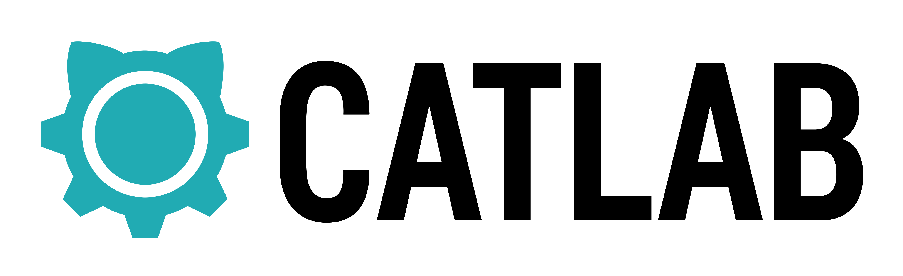
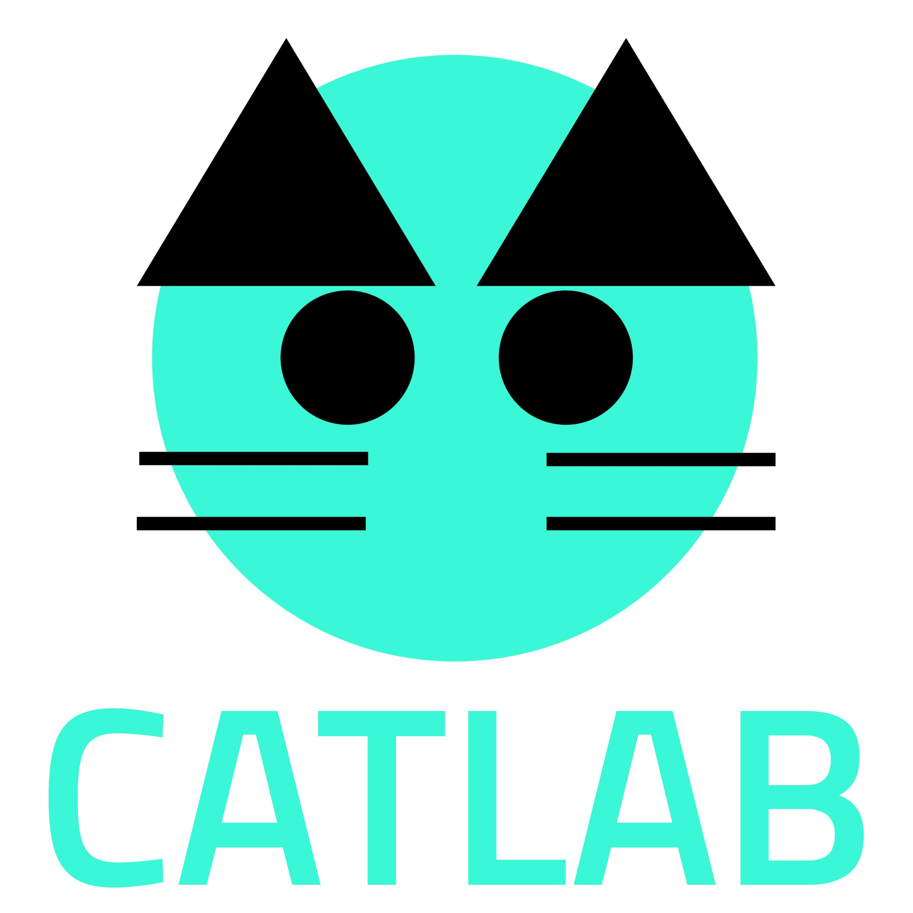
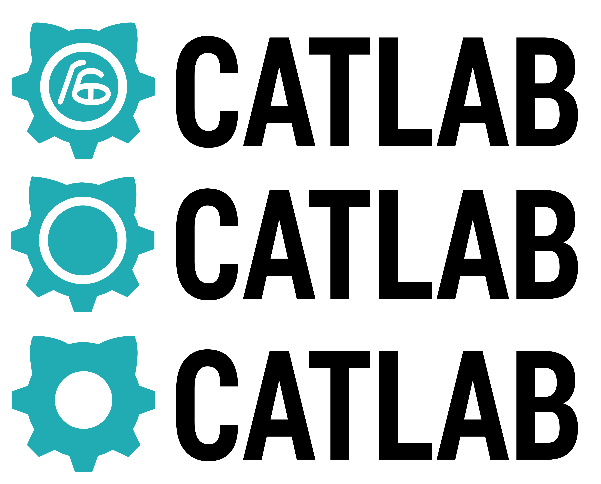

I joined a student-driven team on campus to help redesign a SMART classroom on our campus into a makerspace catered to providing students the free tools to bring their cool ideas to life and a fun environment to create and tinker in. One of the ways we want to help students distinguish our space from others on campus is through a unique logo.

This was one of our team's first attempts at designing the logo. It was created by our president and unfortunately, at the time, our team was rushed to have some sort of branding done in order to complete our crowdsource funding as soon as possible.
We chose to go with a shade of teal because our University's Sixth College color is teal and incorporated feline features as a play off of the acronym "CAT" which stands for Culture, Art, and Technology - Sixth College's core values.
There are several reasons why we felt this logo did not accurately portray our goals as a creative makerspace for the Sixth College community:
As such, I was tasked with redesigning our logo to be more inline with how we wanted our space to be seen by undergraduate students while also incorporating elements from our Sixth College community.

After having done some sketches, these were three variations of single design. For all three designs, the gear shape is meant to represent our makerspace as an environment to create, the teal color matches Sixth College's teal color, and the cat ears are a subtle play at the CAT acronym. The first design also incorporated the actual Sixth College Logo, while the second two did not.
After I asked a few individuals for feedback, the second design seemed more popular because the first design seemed too crowded while the third had too much space. The second design was chosen as the official logo design after a final team vote.
Personally, I still believe the first logo design best represents our team brand. The Sixth College logo, embodies our college's core values, and thus having the logo within our own would make it more symbolic overall to the undergraduate student body. If I were to redesign the logo once more, I would definitely try harder to incorporate more of culture, art, and technology, while still maintaining a simplistic and intuitive aesthetic. I also recognize that it may be difficult to incorporate so many ideas into one design without seeming too busy.